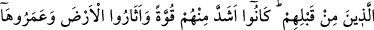

HİÇ DÜŞÜNMEDİLER Mİ?
8. Kendi kendilerine, Allâh’ın, gökleri, yeri ve ikisinin arasında bulunanları ancak
hak olarak ve muayyen bir süre için yarattığını hiç düşünmediler mi? İnsanların
birçoğu, Rablerine kavuşmayı gerçekten inkâr etmektedirler.
9. Onlar, yeryüzünde gezip de kendilerinden öncekilerin âkıbetlerinin nice
olduğuna bakmadılar mı? Ki onlar, kendilerinden daha güçlü idiler; yeryüzünü
kazıp alt-üst etmişler, onu bunların imar ettiklerinden daha çok imar etmişlerdi.
Peygamberleri, onlara da nice açık deliller getirmişlerdi. Zaten Allah onlara
zulmedecek değildi; fakat onlar kendi kendilerine zulmetmekteydiler.
10. Sonunda, Allâh’ın âyetlerini yalan sayarak ve onları alaya alarak kötülük
yapanların âkıbetleri pek fena oldu.
“Kendi kendilerine” ifâdesi âyette geçen tefekkürün/düşünmenin zarfıdır.
Düşünmenin insanın kendi içinden başka bir yerde meydana gelmesi imkansız olduğu
halde “kendi kendilerine/kendi içlerinde” diye zikredilmesi, düşünen kimsenin
durumunu tasvir etmek içindir. Bu ifâde, “Ağızlarıyla söylüyorlar.” (Âl-i İmrân, 3/167)
ifâdesinde olduğu gibi Kur’ân’ın konuyu genişletip açmasındandır. Yâni Mekke kâfirleri
bakışlarını dünyâ hayatının görünen yüzüne mi hasrettiler ve kalblerinde tefekkürü
meydana getirmediler mi? Böyle yapsalardı “Allâh’ın, gökleri,” ulvî cisimleri ve
ruhların göklerini “yeri” süflî cisimleri ve cisimlerin arzını “ve ikisinin arasında
bulunanları” ikisi arasında yaratılan şeyleri ve kuvvetleri, onlardan ibret almaları,
onlarla Yaratıcı’nın varlığına ve birliğine istidlâl etmeleri, onların O’nun sıfatlarının
tecellî yerleri ve kudretinin aynaları olduklarını bilmeleri için “ancak hak” hikmet ve
maslahata uygun “olarak ve” Allah Teâlâ’nın göklerin, yerin ve ikisi arasında
bulunanların bakası için takdir ettiği, onların mutlaka kendisine ulaşacakları “muayyen
bir süre” -ki bu ecel/süre kıyâmetin kopma vaktidir- “için yarattığını hiç düşünmediler